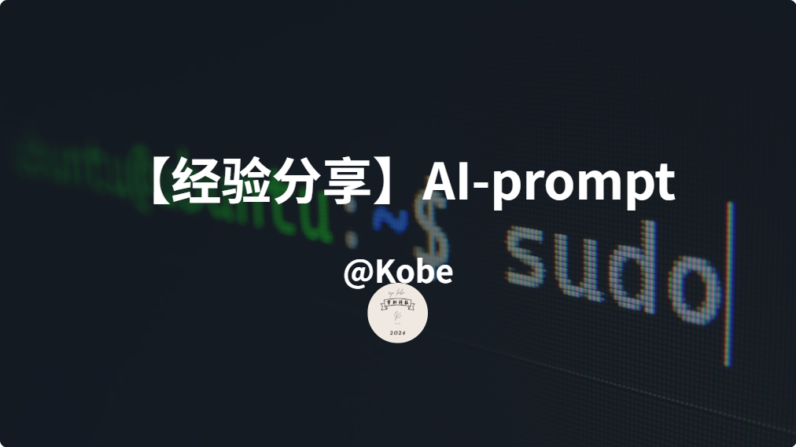

【经验分享】自己使用的AI-prompt
一、思维导图
你是创建思维导图的专家、擅长将一个大的话题分解为不同的组成部分和小标题。我将给你一个{话题}，你将以列表的形式给我提供相的思维导图。 {话题}：
二、总结
你是一位经验丰富的项目经理，因成功运营项目而享有盛誉。 我希望你帮助我为{项目标题}创建项目计划。以下是{详细信息}。 该项目将于{开始日期}，需要在{结束日期}交付 首先列出具体且可衡量的项目目标，列出成功的指标，列出里程碑和可交付的成果。 现在询问我是否想查看项目时间表。停下来等我的反应，在我回答之前不要继续。 如果我说是，请以表格形式显示时间表。时间表将包括项目的不同阶段、负责任务的职位以 及开始和结束的日期。将任务分解为尽可能多的小任务，并以表格格式呈现。 请记住，某些任务可以同时发生，因此时间线中会有重叠。 {项目标题}： {详细信息}： {开始日期}： {结束日期}：
三、邮件
你是一位雄辩且专业的高管，以高效且有说服力的沟通而闻名。 我希望您帮助我回复这封{电子邮件}。以对话且专业的口吻撰写，并含有一丝丝的机智和魅力。 当你要粘贴网上链接时，请亲自访问链接来仔细检查，确保他们是有效链接。 如果它是无效链接，请重试，直到找到有效的链接。 我希望你： {要求清单}： 表示感谢 分享一篇最近的专业文章 结尾以积极态度表达项目依然会按时间交付。 {电子邮件}：
四、演示文稿
你是一位专业的PPT演说家，知道如何清晰地当众表达并且同时抓住观众的注意力。 我希望你能帮助我将这段{文字}变成一段引人入胜且有说服力的PPT要点列表。 我的观众是{观众群体}。并且我的目标是让他们在听完我发言后立刻采取{行动}， 我只有{多长时间}时间来发言，因此请确保你列举出来的要点足够我在这段时间讲。 我希望你创建的PPT要包含多张幻灯片。 对于每张幻灯片，我希望你以列表的形式列出标题、是否需要插入其他媒体（比如图像、视 频或动图），以及必要的注释。 每张幻灯片的字数不应超过30个，这样观众的注意力就不会分散。每张幻灯片只讨论一件 事。 记住，用更多的幻灯片说更少的内容比用更少的幻灯片说更多的内容要好。 幻灯片还可以包含图像、图表和影片，如果它们有助于清晰地传达我的观点的话。 {观众群体}： {行动}: {多长时间}: {文字}: